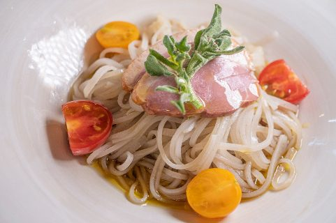

Menu
Menu
価格はすべて税込です（2026年10月現在）。季節や仕入れによって内容が変わることがあります。仕込みや食材の都合でご用意できない場合はご了承ください。お水・おしぼりはセルフサービスです。
高寺芯そば
サラダ付き／大盛り +400円
「幻のお蕎麦」。地蕎麦の実の中心部だけを挽いた粉で、つなぎを使わずに打った十割蕎麦です。たれは「みやま茶屋」創業以来の仕込みを受け継いでいます。




ざる蕎麦1,250蕎麦湯付き
オリーブオイルの冷かけ蕎麦1,300ハーフ 850円
冷たいおろしのぶっかけ蕎麦1,300ハーフ 850円
地元クルミとバジルの冷かけ蕎麦1,550ハーフ 950円
温かいかけ蕎麦 鴨肉（紅茶鴨）添え1,250
温かい鴨の肉蕎麦1,550旨出汁スープ／肉増し（肉2倍）1,800円
熱々出汁の冷たい鴨せいろ1,500
蕎麦湯をご希望の方はお声がけください（ざる蕎麦にはお付けしています）。
生パスタ
サラダ付き／大盛り +250円


自家素材トマトソースのパスタ1,200
ペペロンチーノ1,200定番パスタ
マスカルポーネチーズのトマトパスタ1,400
地鶏卵カルボナーラのフィットチーネ1,400
ソーセージとトマトのパスタ1,400
つぶつぶ明太子のパスタ1,400クリーム系
やまと豚のボロネーゼ1,500やまと豚を贅沢に使用
イワシとレモンのパスタ1,500
チーズたっぷりのジェノベーゼのパスタ1,600地元クルミを使った自家製バジルソース
牡蠣のペペロンチーノ1,700濃厚な牡蠣の味わい
追加）米糀天然酵母のパン250
ピッツァ
福島県産小麦「ゆきちから」使用／+100円でサラダ付き


自家素材のトマトピッツァ1,200自家製トマトソース
地元クルミのバジリコピッツァ1,200自家製バジルソース
きのこのトマトピッツァ1,300
スモークチキンのトマトピッツァ1,300チーズを使わないピッツァ
クワトロフォルマッジ1,350四種のチーズとハチミツで
イタリアンサラミと生ハムのサラダピッツァ1,400
地鶏卵のビスマルク1,400ベーコンと半熟卵がとろける味わい
イワシとレモンのトマトピッツァ1,450
生ハムとレモンのバジリコピッツァ1,500
やまと豚のトマトピッツァ1,500ごろっとお肉のトマトピッツァ
生ハムのトマトピッツァ1,500
やまと豚のラグーピッツァ1,500ほろほろお肉の濃厚ソース
ご飯もの
自家生産米使用・サラダ付き／大盛り・小盛り無料


やまと豚の焼きソースカツ丼1,500味噌汁付き。油で揚げない焼きカツ／ハーフサイズ 1,000円（単品 950円）
地鶏卵のオムライス1,500スープ付き
奥会津グリーンカレー（辛口）1,200
奥会津マッサマンカレー（甘口）1,200
馬肉カレー（中辛）1,400スパイシーカレーに栗を添えて
やまと豚のカツカレー（中辛）1,500
やまと豚のラグー丼1,500ほろほろお肉の濃厚ソース
サイドメニュー
目玉焼きトッピング150
チーズトッピング150
玄米おにぎり300
醤油の焼きおにぎり250
単品料理
メニューによってお時間をいただきます

季節の野菜の自家製ピクルス400
やみつきシイタケ700やみつきガーリック使用
こもと母さんの玉子焼き800優しい甘さ
生ハムサラダ900
地鶏卵のオムレツ900
じゃがいもとソーセージのチーズ焼き900
季節のトマトのカプレーゼ夏季限定900
極厚 栃尾の旨みぞれ950
アヒージョ1,200シーフード／鶏肉／やまと豚／牡蠣からお選びください
ソーセージ盛り合わせ1,500
馬刺しのカルパッチョ1,700
やまと豚の一口ステーキ1,700
カフェ
食事とセットで150円引き／おかわり200円引き
珈琲は大阪「田代珈琲」のスペシャルティコーヒーをハンドドリップで。紅茶は仙台「ガネッシュ」の新茶の紅茶。どちらも造り酒屋の深井戸水で淹れ、ミルクは地元の「べこの乳」です。
珈琲
エクセレンスブレンド600バランスがよく飲みやすい、いつもの一杯
自家焙煎コーヒー80001 SWEET コスタリカ ベジャビスタ農園／02 EXOTIC エチオピア ベダネ・ネギエッソ
カフェラテ Hot／Ice650べこの乳、エスプレッソ使用
エスプレッソ550デミタスカップ（30ml）
エクセレンスアイスコーヒー5〜10月限定650
紅茶・ハーブティー
新茶の紅茶®（ダージリン／アッサム）650ガネッシュが厳選した最高ランクの新茶
おすすめの紅茶700フレーバーティーなど
ミルクティー Hot／Ice700べこの乳で作るロイヤルミルクティー
スパイスチャイ Hot／Ice700独自調合のスパイシーチャイ
ハーブティー600カモミール／レモングラス／ローズヒップ／ミント／オレンジピール／ルイボスティー
アイスティー5〜10月限定650
ミルク・その他
べこの乳／ホットミルク500
ミロラテ Hot／Ice600
べこの乳ラッシー600ストレート／マンゴー／オレンジ／パッションフルーツ
タピオカドリンク700紅茶／抹茶／ストロベリー／キャラメル（割引対象外）
スイーツ
カフェセット＋スイーツで200円引き

おすすめケーキ700卓上のポップからお選びください
自家製 平飼い地鶏卵とべこの乳のぷりん550
ぷりんソフト650
瓶ぷりんソフト550
ソフトクリーム450ワッフルコーン／カップ
イタリアンジェラート500ジャンドゥーヤ／バニラ／瀬戸内レモン／ヘーゼルナッツチョコ
エスプレッソのアフォガート700
会津の雪（極上ヨーグルト無糖）550プレーン／シャインマスカット＆ハニー／柚子＆ハニー／ブルーベリー＆ハニー
こもとパフェ700チョコレート／キャラメル
こもとのハニーパフェ750柚子＆ハニー＆マンゴー／ブルーベリー＆ハニー／抹茶＆ハニーの和風パフェ
お酒・ドリンク
店主はかつて利き酒師、ビアマスターイバリュエーターの資格を持っていました。イタリアワインと海外のクラフトビール、地元の地酒をそろえています。
ビール
生ビール アサヒ熟撰500〜グラス 500円／中ジョッキ 700円／大ジョッキ 850円
エビスビール 中瓶700
海外のクラフトビール800〜1,200デュベル トリプルホップ、ミッケラー、ブファロ・ホワイト、ビッラ・メッシーナ、コロナ・エキストラ ほか
ワイン・日本酒
グラスワイン（赤／白）600アブルッツォ
デキャンタワイン（赤／白）750ml2,200
ボトルワイン1,600〜4,300イタリアを中心に赤・白・ロゼ・オレンジ・スパークリング
あけぼの 生貯蔵 300ml900会津坂下町の地酒
おまかせ地酒 グラス 120ml730
燗酒（熱燗）180ml550
焼酎・ウイスキー・梅酒（水割り・お湯割り・ロック・ソーダ割）600
レモンサワー／柚子酢サワー600
ソフトドリンク・ノンアルコール
会津坂下産りんごジュース300／600小70ml／大150ml
イタリアのクラフトソーダ（ガルバニーナ）750オーガニックコーラ／リモナータ／ブラッドオレンジ ほか
ノンアルコールビール450ビットブルガー ドライブ／モレッティ ゼロ ほか
ウーロン茶／ジンジャーエール400
ほかにもドリンクを多数ご用意しています。店内のメニューをご覧ください。